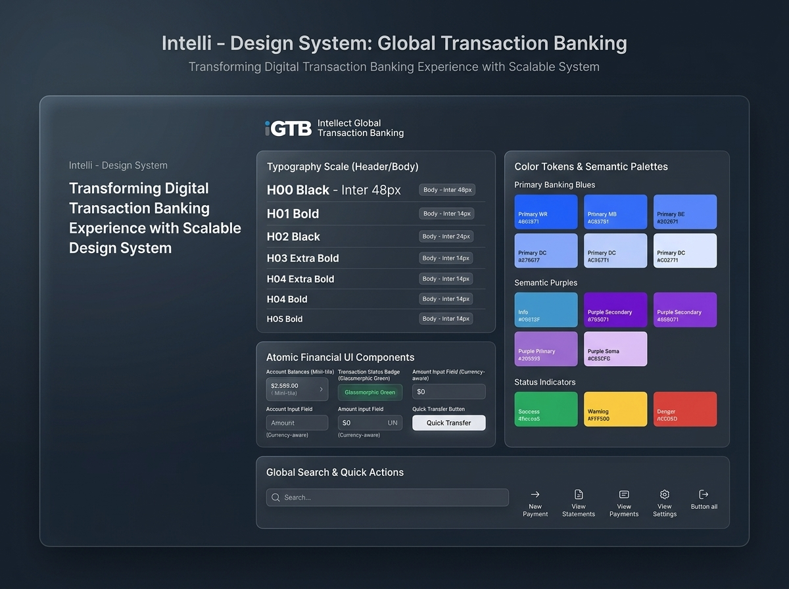

Trade Finance & AI Risk Dashboard
An AI-assisted dashboard telling risk analysts what to look at first — built with full LTR & Arabic RTL system parity for Middle Eastern banking institutions.

Forty live metrics on screen, with zero sense of priority.
Trade finance risk analysts oversee multi-million dollar letters of credit, bill discounting, and counterparty limits. In the baseline system, critical anomaly spikes were visually indistinguishable from everyday transaction noise. Analysts spent hours manually checking tables rather than investigating actual fraud vectors.
Delayed Detection
Risk events were detected on average 6 hours late because anomaly alerts lacked visual hierarchy and urgency ranking.
Arabic RTL Mismatch
Regional banking partners in the UAE and Saudi Arabia suffered from broken mirrored charts and misaligned data columns.
Cognitive Overload
Lack of explainable AI meant analysts didn't trust automated flags and repeated manual audits from scratch.
Signal, Context, and Explainable AI.
We structured the workspace into three tiers: top-level actionable anomaly signals, mid-level historical counterparty context, and an AI co-pilot that answers natural language inquiries ("Why did this supplier volume spike 300%?") with cited transaction logs.
"AI doesn't replace the underwriter's judgment—it strips away 90% of the statistical fog so they can apply their experience where it truly matters."
— Sarvesh Sawardekar, Design LeadHalaPark 2.0 & Design System
Geospatial parking discovery, 1-tap bookings, and a 4-stage modular token design system.